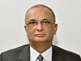

The management board is responsible for smooth running of the company in terms of financial, operational, legal and business development matters, including investment and strategic initiatives, which concerns the IKLL group portfolio.
Dr. U. S. Awasthi The Chief Executive Officer of IFFCO, designated as Managing Director...

Nominee Director
Mr. Rakesh Kapur holds the position of Nominee Director in IFFCO. Mr Kapur is also responsible for the Finance Division of IFFCO.

Nominee Director
Mr. K. L. Singh, hold the position of Managing Director in IFFCO. Mr. K. L. Singh graduated in Mechanical Engineering from Bihar College of Engineering.

Managing Director
Mr. Yogendra Kumar is holding the position of Nominee Director in IKLL. He holds a bachelor degree in agriculture and hails from the family of agriculturists...

Nominee Director
He brings on board of IKLL,Marketing and Logistics expertise in addition to Strategic Planning and HRD having more than a decade of diversified and rich experience.

Independent Director
She brings on board of IKLL, her wide and varied experience, leadership skills ,acumen and rich management expertise...

Independent Director
He has rich experience of managing Project
CEO
Mr. S.R Bommidi is currently holding the position of Chief Financial Officer in IKLL...

CFO